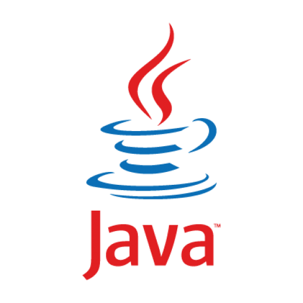
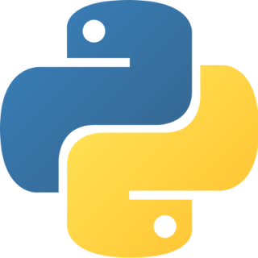
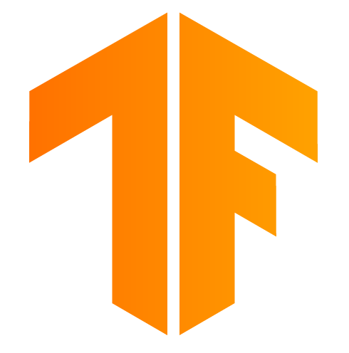
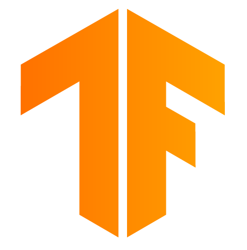

履歴書よりよくわかりそう。そんなページ。
ポートフォリオ
以下に自分の経歴などを簡単にまとめていきます。随時更新予定。
その他、記事などはこちら！
経歴
氏名:仲野悠人(なかの ゆうじん)西暦2000年1月19日生まれ
福岡出身。豚骨ラーメンにはうるさい。一番好きなのは家系ラーメン。
転勤族だったため、神奈川、宮城などを転々としていたら仙台で東日本大震災に被災。
身の回りの当たり前に使っていた電子機器が使えなくなり、その時にを境に情報技術に興味を持つ。
保有資格/受賞歴
・ITパスポート・基本情報技術者
・2018年 九州地区全国高校生IT・簿記選手権大会 IT部門個人9位
(現在令和2年度ネットワークスペシャリスト試験に合格するべく鋭意勉強中)
->コロナのため、延期されてしまったため、来年度の受験を目指す。
LPIC取得相当の技術を身につけるべく勉強中(受験料が高すぎて手に負えない)
学歴、学修分野
現在:東京理科大学 理工学部 情報科学科 三年 (2018年入学)確率論、統計学、暗号論、グラフ理論、計算機全般(コンパイラの作成、GUIアプリケーションの作成など)
研究室
東京理科大学 理工学部 情報科学科 松澤研究室専攻:ネットワーク全般
インターン
since 2020/12株式会社MICIN Information Security部署
ゼロトラストネットワーク実現に向けた活動
・SIEM,CASB,IDaaS等の活用
セキュリティ分野の実践的活動
・CSIRT組織構築に向けての取り組み
・フォレンジックの知識
・ペネトレーションテスト、カオスエンジニアリングへの挑戦
インフラストラクチャの構築
・AWS
・terraform等IaC
得意分野
プログラミング言語
・Java・Python3
・R,C,C++,Ocaml(ほんの少し...)
 
その他の技術
・機械学習を用いた基本的なデータ分析(scikit-learn,tensorflow,keras)・Linux
・arduino/rasberry pi などのマイコン

 

ネットワーク
・専攻。・ネットワーク知識全般に自信あり
・ゼロトラストネットワーク
・AWS等のインフラ構築
デザイン系
・html,CSS(このサイトを作る程度)・ペイントツール全般
・3Dモデリング(Metasequoia)
趣味
・自転車旅(超長距離)・アウトドア全般
・お酒
・カフェ巡り
・ボルダリング
・温泉(旅とセット)
・服(コーディネート全般)
その他、質問があったら気軽に連絡をください。